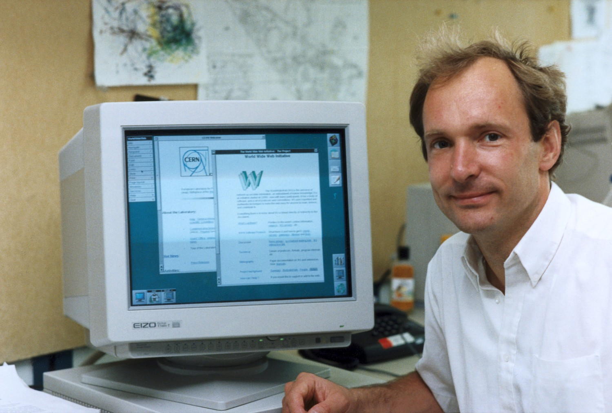

Первый в мире сайт был создан Тимом Бернерсом-Ли в 1991 году. Он был посвящен проекту World Wide Web и содержал только текст и гиперссылки. Никаких изображений, CSS или JavaScript!
В 1990-х годах сайты были очень простыми, с минималистичным дизайном и использованием таблиц для верстки. Анимации и интерактивные элементы появились позже, с развитием технологий.
